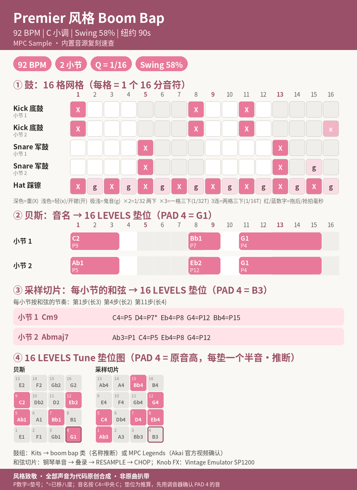
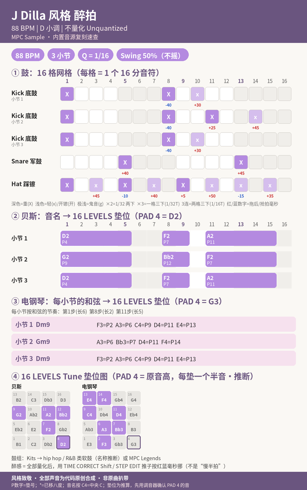
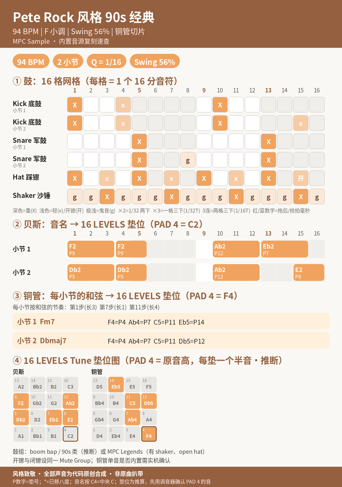
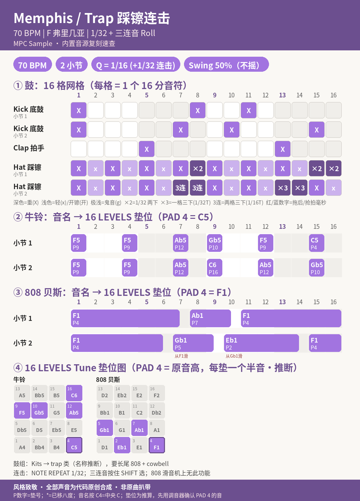
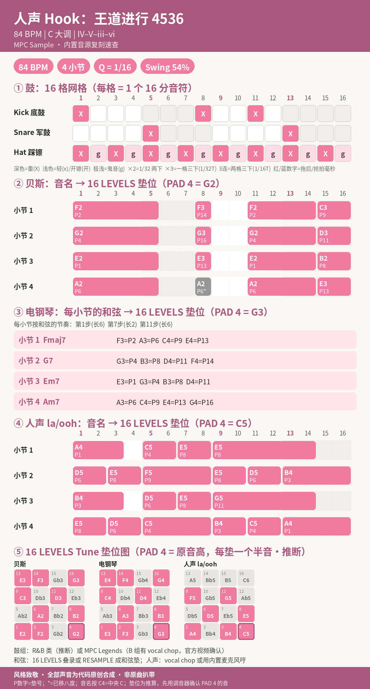
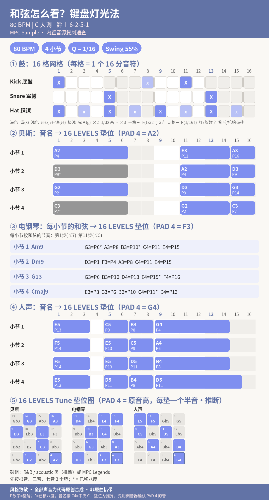

节奏网格实验室：看视频 → 在 MPC 上打出来
第二章 / 第四章 · 章内交互 竖屏网格视频 + 机上逐步课 草稿 · 含推断
每一节：先看视频（网格亮起的格子就是该敲的时候）→ 在右边点网格、听声音 → 照动手卡在 MPC Sample 上用出厂音色打出来。视频里的声音全是代码合成的，底部都写着 “风格致敬 · 全部声音为代码原创合成 · 非原曲扒带”；本页的网格同样只是教学示例，不是任何原曲的扒谱。
怎么读：点编号展开那一节（一次只开一节，可以直接用网址 #lab-01…#lab-06 打开）。每张动手卡写“按什么 → 屏幕上会出现什么 → 下一步”；按键后的数字是面板编号（见 第一章附录）；标（推断）的地方手册没写明，需要实机确认。虚线下划线的词可以点开看解释。
BPM：SEQ → 按住 B1 → 转 ENCODER（手册 p.39）。Swing：在 Sequence 页转 K3（RT Swing）到 58%（p.39，只改播放手感、不挪音符）；要把音符真正挪位：SHIFT + PAD 14（TIME CORRECT）→ K3 Swing → B3 Do It!（p.59）。58% = 每拍第 2、4 个 16 分音符晚约 26 毫秒（50% 不摇）。 在模拟器里看这一步 →
片段：1. 先听底鼓：1拍重击 + 两个切分（0.0–5.2 秒） · 2. 加军鼓：打在 2、4 拍（5.2–10.4 秒） · 3. 踩镲走 16 分音符 + Swing 58%（10.4–15.7 秒） · 4. 加贝斯 + 采样切片：Cm9 → Abmaj7（15.7–20.9 秒）
🎬 原创网格视频（竖屏 1080×1920，约 22 秒，1.6 MB，下载 mp4）· 视频底部说明：风格致敬 · 全部声音为代码原创合成 · 非原曲扒带。片段芯片的起止秒数由 pattern JSON 的段落小节数 × 每小节 2.609 秒算出。
（开启 JavaScript 后这里是可点击的 16 格鼓网格；也可以看「原图」。）
上：标准打击乐五线谱（x 符头 = 踩镲，第三间 = 军鼓，下间 = 底鼓；括号 = 鬼音；16 分音符，Swing 58%）。下：同一段的网格谱对照。在「网格」标签点 ▶ 播放时，谱子上当前的音符会跟着亮；在网格里改格子，谱子也会跟着变。
（开启 JavaScript 后可点击音名听音、看 16 LEVELS 垫位。）
一步一步：左边面板上闪的就是要按的键，右边是屏幕上会出现什么（编号对应下面的说明）。依据官方手册 v1.3.0；标（推断）的需实机确认，鼓组名不编造。
Premier 式“切碎重排”要用的按键。点下面的按钮，或直接点面板上发光的键（CHOP、K3、B1–B3），屏幕模拟会切换并标注。依据手册 p.22、p.31–32。
风格背景、历史和更多网格：Boom bap ＋ DJ Premier 五法。
0. 90 年代纽约 Boom bap 鼓：挑什么音色、怎么调
- 用什么： 出厂鼓组里的 MPC Legends（Akai 官方视频确认）或 Kits → boom bap 类（分类名来自官方视频口述；具体鼓组和采样名以屏幕为准，本页不编造）。
- Kick 挑选标准： 短、低频圆（“咚”不是“轰”）、开头带一点点 click。调法： Trim 页 K2 End 收短尾巴；Tune 页 K1 Semi Tune −1～−2 更沉（经验值）；Mix 页 Volume 0 dB。
- Snare 挑选标准： 厚、有房间感或粗糙颗粒。调法： Mix 页 Volume −1 dB、Pan C；嫌刺用 Filter（B3）LPF2 稍收高频；Tune 0～+1 更“啪”（经验值）。
- Hat 挑选标准： 紧、暗一点的 closed hat。调法： Filter LPF2、Cutoff 90–105（经验值）；Volume −4 dB、Pan 约 10R；和 open hat 设同一 Mute Group（Play 页 K2，手册 p.28）。
- 力度： Amp Env 页 K3 Vel Sens 别设 0，否则 ghost note 打不轻（手册 p.26）；精修用 STEP EDIT 的 K3（p.43）。也可以用 16 LEVELS 的 Velocity 类型，把一个 snare 铺成 16 个力度（p.22/35）。
- 调试顺序： 选鼓组 → 选 kick → 调 kick → snare → hat → 设 BPM → 设 Swing → 录制 → 调力度 / 音量平衡。每一步按什么、屏幕上出现什么，见「在 MPC 上做」标签（第 ①–⑱ 步）。
1. 本节要做出什么
| 项目 | 内容 |
|---|---|
| 速度 | 92 BPM |
| 长度 | 2 小节（第 2 小节鼓多两下、和弦换成 Abmaj7） |
| Swing | 58%（MPC 式刻度，Q = 1/16） |
| 声部 | 底鼓、军鼓、踩镲、贝斯、采样切片 |
| 鼓组 | Kits → boom bap 分类里任一鼓组（具体名字以屏幕为准，推断）；找不到就用已确认存在的 MPC Legends。 |
| Kick / Snare / Hat | 出厂 boom bap 鼓组或 MPC Legends 的鼓 来源：MPC Legends：Akai 官方视频确认；boom bap 分类：Akai 视频口述（具体鼓组名推断） |
| 贝斯 | 任一 one-shot bass（MPC Legends 里有，官方视频确认）或 SAMPLE SELECT 里的贝斯单音（文件夹名推断） 来源：部分确认 |
| 钢琴切片 Cm9 → Abmaj7 | 钢琴 / 键盘单音 → G6 方法 B 重采样成“和弦采样”再切 来源：乐器单音存在（手册 p.7）；具体钢琴文件名推断 |
2. 准备
- G1：新建工程，装上表的鼓组。
- G2：BPM 92，K1 先设 1 小节，K2 Q = 1/16，B3 录音量化开，K3 RT Swing 58%，节拍器 Record，预备拍开。
- 长度计划：先录 1 小节鼓 → DOUBLE SEQ 成 2 小节 → 补第 2 小节的 kick（第 16 步）和 ghost snare（第 15 步）。
3. 动手卡
3-1 鼓（底鼓、军鼓、踩镲）
X 重 · x 中/轻 · g 鬼音（很轻）· O 开镲 · · 空 · r 一格两下（1/32）· 3 一格三下（1/32T）· t 两格三下（1/16T）；b1、b2＝只在第几小节。
step 1 2 3 4 | 5 6 7 8 | 9 10 11 12 |13 14 15 16
Kick b1 X · · · | · · · X | · · X · | · · · ·
Kick b2 X · · · | · · · X | · · X · | · · · x
Snare b1 · · · · | X · · · | · · · · | X · · ·
Snare b2 · · · · | X · · · | · · · · | X · g ·
Hat X g X g | X g X g | X g X g | X g X g
- 按什么 → 看到什么 → 下一步： 按 G3 一件一件叠录。屏幕在 Sample/Seq 模式下仍显示序列页，播放头走到哪、敲到的垫就亮。录完按 STOP，再 PLAY 对照视频听。
- 第 2 小节第 15 步的 snare 是 ghost（力度约 38），轻到几乎听不见才对。Kick 第 8 步也是轻的（约 95）。
3-2 贝斯（16 LEVELS Tune，PAD 4 = G1）
- 按什么： E 组 PAD 1 装贝斯单音 → G4 把 PAD 4 调到 G1 → 开 16 LEVELS（屏幕出现 “16” 图标）→ SHIFT + 16 LEVELS 选 Tune。
- 然后： G5，照下表录。灰色 / * 的音超出 16 个垫的范围，已移八度（推断的简化）。
| 小节 | 第几步 → 音名 / 垫（长度=格数） |
|---|---|
| 1 | 第 1 步 C2 → PAD 9（3） · 第 8 步 Bb1 → PAD 7（2） · 第 11 步 G1 → PAD 4（5） |
| 2 | 第 1 步 Ab1 → PAD 5（3） · 第 8 步 Eb2 → PAD 12（2） · 第 11 步 G1 → PAD 4（5） |
3-3 采样切片（和弦，PAD 4 = B3）
- 按什么： F 组 PAD 1 装钢琴单音 → G4 把 PAD 4 调到 B3 → 16 LEVELS Tune → 用 G6 的方法 A（叠录）或方法 B（每个和弦一个垫）。
- 你会看到 / 听到： 每叠一圈，和弦就厚一层；第一圈只有最低音时听起来像第二条贝斯，正常。
和弦节奏：每小节第 1、4、11 步按（长度依次 3 / 2 / 4 格）。
| 小节 | 和弦 | 组成音 | 音名 = 垫（从低到高按垫号） |
|---|---|---|---|
| 1 | Cm9 | C Eb G Bb D | C4=PAD 5 · D4=PAD 7* · Eb4=PAD 8 · G4=PAD 12 · Bb4=PAD 15 |
| 2 | Abmaj7 | Ab C Eb G | Ab3=PAD 1 · C4=PAD 5 · Eb4=PAD 8 · G4=PAD 12 |
3-4 把和弦做成“旧唱片切片”
- 用 G6 方法 B 把 Cm9、Abmaj7 两个和弦重采样到一个垫，再 CHOP 成 2 块（Regions 4 后 Merge，或 Manual）。
- 选中和弦垫 → SAMPLE → B3 翻到 Filter → K3 Type 选 HPF2，K1 Cutoff 慢慢往上推，直到低频变薄（视频切掉了约 180 Hz 以下；Cutoff 0–127 和 Hz 的对应手册没写，靠耳朵）。
- SHIFT + KNOB FX → 选 Vintage Emulator → K1 Type 选 SP1200 或 MPC60（手册 p.55）→ 只按和弦垫。这就是视频里“低保真”的那一层。
- 和弦节奏：每小节第 1、4、11 步按（第 1 下长、第 4 下短、第 11 下中等）。用 Amp Env（B1 翻到 Amp Env，K2 Decay）把尾巴收短，切片感更强。
4. 音名 → 垫位总表（推断）
- 依据：手册“Tune 类型下原音高在 PAD 4，往下的垫降调、往上的垫升调”（p.22/35）+ Akai 官方视频“按半音铺开”。所以 PAD n 的音 = PAD 4 的音 + (n − 4) 个半音，范围 PAD 1（−3）到 PAD 16（+12）。
-
音名按 C4 = 中央 C（MIDI 60）。“PAD 4 =” 是为了让本课所有音尽量落在 16 个垫里选的；你也可以换别的音，只要整张表一起平移。
- 贝斯（PAD 4 = G1）：PAD 4 = G1、PAD 5 = Ab1、PAD 7 = Bb1、PAD 9 = C2、PAD 12 = Eb2
- 采样切片（PAD 4 = B3）：PAD 1 = Ab3、PAD 5 = C4、PAD 7 = D4、PAD 8 = Eb4、PAD 12 = G4、PAD 15 = Bb4
5. 混音小提示和保存
- Kick 0 dB、Snare −1 dB、Hat −4 dB 且 Pan 约 10R、贝斯 +1 dB、钢琴切片 +2 dB 且 Pan 约 5L（数值来自视频工程，Pan 换算到 50L–50R 为推断）。
- 黑胶底噪：Knob FX 换成 Vinyl Emulator（手册 p.55）给全部垫，K2 Crackle 一点点。注意一次只能开一个 Knob FX——要和 Vintage Emulator 二选一，或先 RESAMPLE 固化再换。
- 通用步骤（音量 / 声像 / Knob FX / 压缩 / 保存 / 导出）见 G8。建议工程名：
PREMIER-ONBOARD。
6. 和视频不一样的地方 · 需要实机确认
不一样的地方
- 视频里所有声音都是代码合成的（底部写着“风格致敬 · 全部声音为代码原创合成 · 非原曲扒带”）；机上用的是出厂采样，音色一定不同。
- 视频的鼓和钢琴是代码合成，出厂鼓组的音色、长度不同，boom 感要靠选 kick。
- 视频有轻微侧链“压缩感”（duck 0.15）；机上可用 Knob FX Pumper（手册 p.53）模拟，但会占用 Knob FX。
- 视频的 lo-fi 和黑胶是同时叠的；机上 Knob FX 一次一个，用 RESAMPLE 分步固化。
需要实机确认（推断点）
- 出厂 Kits / 采样文件夹的确切名字（手册只举了 Snares；鼓组名只确认了 MPC Legends）。
- 16 LEVELS Tune 每垫是否正好一个半音；Semi Tune 是否叠加到 16 LEVELS 上。
- 退出 16 LEVELS 后，已录音符是否保持音高。
- boom bap 分类下的具体鼓组名。
- Filter Cutoff 值与 Hz 的对应。
相关风格页：Boom bap ＋ DJ Premier 五法
Boom bap 是 80 年代末到 90 年代纽约 hip-hop 的鼓声：从老唱片采样、切碎重排，再配上硬朗的 kick 和 snare。下面每一条都附了来源；视频只链接 YouTube，不下载。离线（file://）打开时只显示链接。
Marley Marl Korg SDD-2000 采样延迟 ＋ Roland TR-808 触发
代表作：MC Shan《The Bridge》（1986）
他在 Unique Studios 给 Captain Rock 做歌时误把一下军鼓采了进去，发现采来的鼓比鼓机的好听——从此用唱片上的 kick、snare 自己编鼓；《The Bridge》采了 Honey Drippers《Impeach the President》开头的鼓，用 808 的触发脉冲去“敲”采样器，在家里 4 轨录完。
来源：NPR Microphone Check 访谈（2013） · Red Bull Music Academy 讲座（2014） · Okayplayer：Classic Recipes 复刻《The Bridge》
DJ Premier Akai MPC60 ＋ Akai S950
代表作：Gang Starr《Mass Appeal》（1994）
他只用 MPC60 触发鼓，采样都放在 S950 里（只有约 60 秒采样时间，逼着他把采样切短再排）；《Mass Appeal》的主旋律是一段放慢的约 2 秒 Vic Juris 采样，故意做成“电梯音乐”来讽刺当时电台的软化。
来源：Sound On Sound：DJ Premier · POW Mag：The Making of “Mass Appeal”（2019） · Billboard：Hard to Earn 25 周年访谈
Pete Rock E-mu SP-1200
代表作：Pete Rock & CL Smooth《They Reminisce Over You (T.R.O.Y.)》（1992）
他说早年作品“全是 SP-1200 做的”；和 Large Professor 一起挖唱片找到 Tom Scott《Today》，先从那段低音线做起，再加入萨克斯段落，部分工作在 Large Professor 家用他的采样器完成。
来源：Village Voice：The Dirty Heartbeat of the Golden Age · Complex：Pete Rock Tells All · DJBooth：Beat Break（2018）
RZA Ensoniq EPS-16+（后来主力换成 ASR-10）
代表作：Wu-Tang Clan《C.R.E.A.M.》（专辑 1993）
采了 The Charmels 1967 年《As Long as I’ve Got You》开头的钢琴旋律，切开后做成又暗又脏的 loop；Sweetwater 的器材考证说这首用的是 EPS-16+。
来源：NPR：C.R.E.A.M. — The Story Of A Sample（2011） · Sweetwater：The Gear Behind Enter the Wu-Tang
Large Professor E-mu SP-1200
代表作：Main Source《Looking at the Front Door》（专辑《Breaking Atoms》1991）
他说是工程师 Paul C 把他从“磁带拼接”时代带到 SP-1200；《Looking at the Front Door》取材 Donny Hathaway《The Way I Love You》，重新排了结构。
来源：Red Bull Music Academy Daily 访谈（2015） · The Art of Sampling：Beat Breakdown
Buckwild（D.I.T.C.） E-mu SP-1200（O.C.《Word…Life》时期）
代表作：O.C.《Time’s Up》（1994）
他说那张专辑是“把采样切碎、加铜管、用 SP-1200 实验”出来的；《Time’s Up》改造了 Les DeMerle《A Day in the Life》的片段，并用了 Slick Rick 的人声。
来源：Complex：Buckwild Tells All · REVOLT：11 of Buckwild’s most iconic beats（2019）
原速查图（点图看大图）。


BPM：SEQ → 按住 B1 → 转 ENCODER（手册 p.39）。Swing：在 Sequence 页转 K3（RT Swing）到 50%（p.39，只改播放手感、不挪音符）；要把音符真正挪位：SHIFT + PAD 14（TIME CORRECT）→ K3 Swing → B3 Do It!（p.59）。50% = 不摇。
片段：1. 先听“量化”版：全部卡在网格上（0.0–5.5 秒） · 2. Dilla 风格：关掉量化，手动错位（5.5–10.9 秒） · 3. 加贝斯和 Rhodes：也故意慢半拍（10.9–19.1 秒）
🎬 原创网格视频（竖屏 1080×1920，约 20 秒，1.4 MB，下载 mp4）· 视频底部说明：风格致敬 · 全部声音为代码原创合成 · 非原曲扒带。片段芯片的起止秒数由 pattern JSON 的段落小节数 × 每小节 2.727 秒算出。
⚠️ 字幕更正：视频第 3 段字幕“也故意慢半拍”说得不准确——军鼓只晚约 40–45 毫秒、和弦晚约 30–35 毫秒，大约是 1/4 个 16 分音符，远不到半拍（88 BPM 半拍≈ 341 毫秒）。课文用准确说法。
（开启 JavaScript 后这里是可点击的 16 格鼓网格；也可以看「原图」。）
（开启 JavaScript 后可点击音名听音、看 16 LEVELS 垫位。）
风格背景、历史和更多网格：Dilla 式律动。
1. 本节要做出什么
| 项目 | 内容 |
|---|---|
| 速度 | 88 BPM |
| 长度 | 2 小节循环（视频第 3 段画了 3 小节，第 3 小节只是第 1 小节的重复） |
| Swing | 50%（不摇） |
| 声部 | 底鼓、军鼓、踩镲、贝斯、电钢琴 |
| 鼓组 | Kits → hip hop 或 R&B 分类里声音偏软的鼓组（名字以屏幕为准，推断），或 MPC Legends。 |
| Kick / Snare / Hat | 软一点的出厂鼓组（hat 选暗一点的） 来源：MPC Legends 确认；分类名来自 Akai 视频口述 |
| 贝斯 | one-shot bass（MPC Legends 有） 来源：官方视频确认 |
| 电钢琴 Dm9 → Gm9 | Rhodes / 电钢琴类单音（文件夹名推断） 来源：乐器单音存在（手册 p.7）；具体文件推断 |
2. 准备
- G1：新建工程，装上表的鼓组。
- G2：BPM 88，K1 先设 1 小节，K2 Q = 1/16，B3 录音量化开，K3 RT Swing 50%，节拍器 Record，预备拍开。
- 长度计划：先全部量化录 2 小节（Q = 1/16，Swing 50%），之后再按下面的“挪动表”把鼓挪出网格。
3. 动手卡
3-1 鼓（底鼓、军鼓、踩镲）
X 重 · x 中/轻 · g 鬼音（很轻）· O 开镲 · · 空 · r 一格两下（1/32）· 3 一格三下（1/32T）· t 两格三下（1/16T）；b1、b2＝只在第几小节。
step 1 2 3 4 | 5 6 7 8 | 9 10 11 12 |13 14 15 16
Kick b1 X · · · | · · · X | · x · · | · · · ·
Kick b2 X · · · | · · · X | · · X · | · x · ·
Kick b3 X · · · | · · · X | · x · · | · · · ·
Snare · · · · | X · · · | · · · · | X · · ·
Hat X · x · | X · x · | X · x · | x · x ·
- 按什么 → 看到什么 → 下一步： 按 G3 一件一件叠录。屏幕在 Sample/Seq 模式下仍显示序列页，播放头走到哪、敲到的垫就亮。录完按 STOP，再 PLAY 对照视频听。
- 这条视频故意不摇（Swing 50%），醉感全部来自下面的毫秒偏移。
3-2 贝斯（16 LEVELS Tune，PAD 4 = D2）
- 按什么： E 组 PAD 1 装贝斯单音 → G4 把 PAD 4 调到 D2 → 开 16 LEVELS（屏幕出现 “16” 图标）→ SHIFT + 16 LEVELS 选 Tune。
- 然后： G5，照下表录。灰色 / * 的音超出 16 个垫的范围，已移八度（推断的简化）。
| 小节 | 第几步 → 音名 / 垫（长度=格数） |
|---|---|
| 1 | 第 1 步 D2 → PAD 4（5） · 第 8 步 F2 → PAD 7（2） · 第 11 步 A2 → PAD 11（5） |
| 2 | 第 1 步 G2 → PAD 9（5） · 第 8 步 Bb2 → PAD 12（2） · 第 11 步 F2 → PAD 7（5） |
| 3 | 第 1 步 D2 → PAD 4（5） · 第 8 步 F2 → PAD 7（2） · 第 11 步 A2 → PAD 11（5） |
3-3 电钢琴（和弦，PAD 4 = G3）
- 按什么： F 组 PAD 1 装电钢琴单音 → G4 把 PAD 4 调到 G3 → 16 LEVELS Tune → 用 G6 的方法 A（叠录）或方法 B（每个和弦一个垫）。
- 你会看到 / 听到： 每叠一圈，和弦就厚一层；第一圈只有最低音时听起来像第二条贝斯，正常。
和弦节奏：每小节第 1、8、11 步按（长度依次 6 / 2 / 5 格）。
| 小节 | 和弦 | 组成音 | 音名 = 垫（从低到高按垫号） |
|---|---|---|---|
| 1 | Dm9 | D F A C E | F3=PAD 2 · A3=PAD 6 · C4=PAD 9 · D4=PAD 11 · E4=PAD 13 |
| 2 | Gm9 | G Bb D F A | A3=PAD 6 · Bb3=PAD 7 · D4=PAD 11 · F4=PAD 14 |
| 3 | Dm9 | D F A C E | F3=PAD 2 · A3=PAD 6 · C4=PAD 9 · D4=PAD 11 · E4=PAD 13 |
3-4 把鼓挪出网格（视频里的红蓝数字）
视频字幕写“也故意慢半拍”，不准确：军鼓实际只晚 约 40–45 毫秒，和弦只晚 约 30–35 毫秒。88 BPM 下半拍≈ 341 毫秒、一个 16 分音符≈ 170 毫秒，所以真正的偏移只有四分之一个 16 分音符左右——听起来是“懒”，不是“慢半拍”。
MPC Sample 的序列精度是 960 tick / 拍（手册 p.65），88 BPM 下 1 tick ≈ 0.71 毫秒：
| 声部 | 哪一步 | 视频偏移 | 约等于 |
|---|---|---|---|
| Snare | 5、13 | +40、+45 ms（拖后） | +56、+63 tick |
| Kick | 8 | −40 ms（抢拍） | −56 tick |
| Kick | 10（小节 1）/ 11、14（小节 2） | +30 / +25、+45 ms | +42 / +35、+63 tick |
| Hat | 3、5、7、9、11、13、15 | +45、−10、+40、+5、+50、−15、+35 ms | +63、−14、+56、+7、+70、−21、+49 tick |
| 贝斯 | 每小节 1、8、11 | +20、−20、+25 ms | +28、−28、+35 tick |
| 电钢琴 | 每小节 1、8、11 | +30、+30、+35 ms | +42、+42、+49 tick |
- Snare 整体拖后： SHIFT + PAD 14（TIME CORRECT）→ 只按 snare 垫（屏幕上被选中的垫会高亮）→ K3 Swing 保持 50% → K2 Shift 往正方向调 → B3 Do It!（手册 p.59）。推断： Shift 的单位手册没写，可能是 tick；先调一个小值，播放听“snare 是不是懒懒地落下”。
- Hat、Kick 每一下都不同： SHIFT + SEQ 进 STEP EDIT → 转 ENCODER 走到那一步 → 敲 hat 垫选中这下 → 推 FADER 往上＝往后挪、往下＝往前挪（手册 p.43）。照上表一下一下挪。
- 贝斯、电钢琴整体拖后： 也可以用 TIME CORRECT + Shift；但它们是 16 LEVELS 录的，选哪个垫才能选中这些音符手册没写（推断）。更简单的办法：录这两轨时按 B3 关掉录音量化，故意弹得稍微晚一点。
- 随时 SHIFT + − 撤销。做完记得把 TIME CORRECT 的 Swing 留在 50%（它是全局值，会影响 NOTE REPEAT）。
4. 音名 → 垫位总表（推断）
- 依据：手册“Tune 类型下原音高在 PAD 4，往下的垫降调、往上的垫升调”（p.22/35）+ Akai 官方视频“按半音铺开”。所以 PAD n 的音 = PAD 4 的音 + (n − 4) 个半音，范围 PAD 1（−3）到 PAD 16（+12）。
-
音名按 C4 = 中央 C（MIDI 60）。“PAD 4 =” 是为了让本课所有音尽量落在 16 个垫里选的；你也可以换别的音，只要整张表一起平移。
- 贝斯（PAD 4 = D2）：PAD 4 = D2、PAD 7 = F2、PAD 9 = G2、PAD 11 = A2、PAD 12 = Bb2
- 电钢琴（PAD 4 = G3）：PAD 2 = F3、PAD 6 = A3、PAD 7 = Bb3、PAD 9 = C4、PAD 11 = D4、PAD 13 = E4、PAD 14 = F4
5. 混音小提示和保存
- Hat −3 dB、Pan 约 13R；贝斯 +2 dB；电钢琴 0 dB 加一点 Reverb（Knob FX 只选电钢琴垫）。
- 视频的 Rhodes 是“扫弦”（每个音错开 14 ms）；方法 A 叠录时手指不完全同时按，反而更像。
- 通用步骤（音量 / 声像 / Knob FX / 压缩 / 保存 / 导出）见 G8。建议工程名：
DILLA-ONBOARD。
6. 和视频不一样的地方 · 需要实机确认
不一样的地方
- 视频里所有声音都是代码合成的（底部写着“风格致敬 · 全部声音为代码原创合成 · 非原曲扒带”）；机上用的是出厂采样，音色一定不同。
- 视频里偏移是逐个音符精确到毫秒的；机上 STEP EDIT 推子每次挪多少 tick 手册没写，只能边听边调。
- 视频的和弦“扫弦”、贝斯偏移是程序加的；机上靠关量化手弹。
- 视频画了 3 小节（D–G–D），本课用 2 小节循环。
需要实机确认（推断点）
- 出厂 Kits / 采样文件夹的确切名字（手册只举了 Snares；鼓组名只确认了 MPC Legends）。
- 16 LEVELS Tune 每垫是否正好一个半音；Semi Tune 是否叠加到 16 LEVELS 上。
- 退出 16 LEVELS 后，已录音符是否保持音高。
- TIME CORRECT 的 Shift 单位与范围。
- STEP EDIT 推子的挪动步长。
- 16 LEVELS 录的音符能否用 TIME CORRECT 单独选中。
相关风格页：Dilla 式律动
原速查图（点图看大图）。


BPM：SEQ → 按住 B1 → 转 ENCODER（手册 p.39）。Swing：在 Sequence 页转 K3（RT Swing）到 56%（p.39，只改播放手感、不挪音符）；要把音符真正挪位：SHIFT + PAD 14（TIME CORRECT）→ K3 Swing → B3 Do It!（p.59）。56% = 每拍第 2、4 个 16 分音符晚约 19 毫秒（50% 不摇）。
片段：1. 90 年代经典：底鼓“弹跳” + 2、4 拍军鼓（0.0–5.1 秒） · 2. 踩镲 + 沙锤：让律动更“密”（5.1–10.2 秒） · 3. 贝斯跟着底鼓走（10.2–15.3 秒） · 4. 加铜管短切片 Stab：Fm7 → Dbmaj7（15.3–20.4 秒）
🎬 原创网格视频（竖屏 1080×1920，约 22 秒，1.7 MB，下载 mp4）· 视频底部说明：风格致敬 · 全部声音为代码原创合成 · 非原曲扒带。片段芯片的起止秒数由 pattern JSON 的段落小节数 × 每小节 2.553 秒算出。
（开启 JavaScript 后这里是可点击的 16 格鼓网格；也可以看「原图」。）
（开启 JavaScript 后可点击音名听音、看 16 LEVELS 垫位。）
风格背景、历史和更多网格：Boom bap 风格页。
1. 本节要做出什么
| 项目 | 内容 |
|---|---|
| 速度 | 94 BPM |
| 长度 | 2 小节（第 2 小节 kick 多第 15 步、snare 多第 8 步 ghost、和弦换 Dbmaj7） |
| Swing | 56%（MPC 式刻度，Q = 1/16） |
| 声部 | 底鼓、军鼓、踩镲、沙锤、贝斯、铜管 |
| 鼓组 | Kits → boom bap 或 90s 类鼓组（名字以屏幕为准，推断），或 MPC Legends（官方视频里有 shaker、open hat）。 |
| Kick / Snare / Hat / Open hat / Shaker | MPC Legends 或 boom bap 鼓组 来源：MPC Legends 的 shaker、open hat：Akai 官方视频确认 |
| 贝斯 | one-shot bass 来源：官方视频确认（MPC Legends） |
| 铜管 stab Fm7 → Dbmaj7 | 铜管 / brass 类单音（推断：出厂内容有乐器单音，但有没有铜管手册没写）；找不到就用任一短促的键盘或合成器单音代替 来源：推断 |
2. 准备
- G1：新建工程，装上表的鼓组。
- G2：BPM 94，K1 先设 1 小节，K2 Q = 1/16，B3 录音量化开，K3 RT Swing 56%，节拍器 Record，预备拍开。
- 长度计划：先录 1 小节 → DOUBLE SEQ → 补第 2 小节的变化。
3. 动手卡
3-1 鼓（底鼓、军鼓、踩镲、沙锤）
X 重 · x 中/轻 · g 鬼音（很轻）· O 开镲 · · 空 · r 一格两下（1/32）· 3 一格三下（1/32T）· t 两格三下（1/16T）；b1、b2＝只在第几小节。
step 1 2 3 4 | 5 6 7 8 | 9 10 11 12 |13 14 15 16
Kick b1 X · · x | · · · · | · X · · | · · · ·
Kick b2 X · · x | · · · · | · X · · | · · x ·
Snare b1 · · · · | X · · · | · · · · | X · · ·
Snare b2 · · · · | X · · g | · · · · | X · · ·
Hat X · x · | X · x · | X · x · | X · O ·
Shaker g g X g | g g X g | g g X g | g g X g
- 按什么 → 看到什么 → 下一步： 按 G3 一件一件叠录。屏幕在 Sample/Seq 模式下仍显示序列页，播放头走到哪、敲到的垫就亮。录完按 STOP，再 PLAY 对照视频听。
- Shaker 每一格都有，第 3、7、11、15 步重（反拍 8 分），其余很轻：按住 NOTE REPEAT 选 1/16，再按住 shaker 垫，重拍时按重一点（推断：Note Repeat 的力度跟随按压力度，需实机确认；不行就先 1/16 轻打一遍，再 1/8 叠一遍重的）。第 15 步是开镲：把 closed hat 垫和 open hat 垫设同一个 Mute Group（SAMPLE → B2 翻到 Play → K2 Mute Group 设 1，两个垫都设；手册 p.28 就是用 hat 举例）。
3-2 贝斯（16 LEVELS Tune，PAD 4 = C2）
- 按什么： E 组 PAD 1 装贝斯单音 → G4 把 PAD 4 调到 C2 → 开 16 LEVELS（屏幕出现 “16” 图标）→ SHIFT + 16 LEVELS 选 Tune。
- 然后： G5，照下表录。灰色 / * 的音超出 16 个垫的范围，已移八度（推断的简化）。
| 小节 | 第几步 → 音名 / 垫（长度=格数） |
|---|---|
| 1 | 第 1 步 F2 → PAD 9（3） · 第 4 步 F2 → PAD 9（2） · 第 10 步 Ab2 → PAD 12（3） · 第 13 步 Eb2 → PAD 7（3） |
| 2 | 第 1 步 Db2 → PAD 5（3） · 第 4 步 Db2 → PAD 5（2） · 第 10 步 Ab2 → PAD 12（3） · 第 15 步 E2 → PAD 8（2） |
3-3 铜管（和弦，PAD 4 = F4）
- 按什么： F 组 PAD 1 装铜管单音 → G4 把 PAD 4 调到 F4 → 16 LEVELS Tune → 用 G6 的方法 A（叠录）或方法 B（每个和弦一个垫）。
- 你会看到 / 听到： 每叠一圈，和弦就厚一层；第一圈只有最低音时听起来像第二条贝斯，正常。
和弦节奏：每小节第 1、7、11 步按（长度依次 3 / 1 / 4 格）。
| 小节 | 和弦 | 组成音 | 音名 = 垫（从低到高按垫号） |
|---|---|---|---|
| 1 | Fm7 | F Ab C Eb | F4=PAD 4 · Ab4=PAD 7 · C5=PAD 11 · Eb5=PAD 14 |
| 2 | Dbmaj7 | Db F Ab C | F4=PAD 4 · Ab4=PAD 7 · C5=PAD 11 · Db5=PAD 12 |
3-4 铜管短切片（stab）
- 用 G4 把铜管单音放到 F 组，PAD 4 调到 F4，开 16 LEVELS Tune。
- G6 方法 A 叠录：每小节第 1、7、11 步按（第 7 步很短）。
- 让它“短促”：SAMPLE → B1 翻到 Amp Env → K2 Decay 调小（手册 p.26）。
- 做旧：Knob FX 选 Vintage Emulator → SP1200，只按铜管垫（手册 p.55）。
4. 音名 → 垫位总表（推断）
- 依据：手册“Tune 类型下原音高在 PAD 4，往下的垫降调、往上的垫升调”（p.22/35）+ Akai 官方视频“按半音铺开”。所以 PAD n 的音 = PAD 4 的音 + (n − 4) 个半音，范围 PAD 1（−3）到 PAD 16（+12）。
-
音名按 C4 = 中央 C（MIDI 60）。“PAD 4 =” 是为了让本课所有音尽量落在 16 个垫里选的；你也可以换别的音，只要整张表一起平移。
- 贝斯（PAD 4 = C2）：PAD 5 = Db2、PAD 7 = Eb2、PAD 8 = E2、PAD 9 = F2、PAD 12 = Ab2
- 铜管（PAD 4 = F4）：PAD 4 = F4、PAD 7 = Ab4、PAD 11 = C5、PAD 12 = Db5、PAD 14 = Eb5
5. 混音小提示和保存
- Hat −5 dB、Pan 约 13R；Shaker −2 dB、Pan 约 15L；铜管 −2 dB、Pan 约 5R；贝斯 +1 dB（视频数值，Pan 换算推断）。
- 贝斯跟着 kick 走（第 1、4、10 步和 kick 同时进），这是本条的重点，音量要让 kick 和贝斯“粘”在一起。
- 通用步骤（音量 / 声像 / Knob FX / 压缩 / 保存 / 导出）见 G8。建议工程名：
PETEROCK-ONBOARD。
6. 和视频不一样的地方 · 需要实机确认
不一样的地方
- 视频里所有声音都是代码合成的（底部写着“风格致敬 · 全部声音为代码原创合成 · 非原曲扒带”）；机上用的是出厂采样，音色一定不同。
- 出厂内容不一定有铜管单音（推断）；替代音色会让“90s 东海岸”味道变淡。
- Note Repeat 打 shaker 的轻重控制需实机确认。
需要实机确认（推断点）
- 出厂 Kits / 采样文件夹的确切名字（手册只举了 Snares；鼓组名只确认了 MPC Legends）。
- 16 LEVELS Tune 每垫是否正好一个半音；Semi Tune 是否叠加到 16 LEVELS 上。
- 退出 16 LEVELS 后，已录音符是否保持音高。
- 出厂内容里是否有 brass / horn 单音及其文件夹名。
- NOTE REPEAT 下按压力度是否改变力度。
相关风格页：Boom bap 风格页
原速查图（点图看大图）。


BPM：SEQ → 按住 B1 → 转 ENCODER（手册 p.39）。Swing：在 Sequence 页转 K3（RT Swing）到 50%（p.39，只改播放手感、不挪音符）；要把音符真正挪位：SHIFT + PAD 14（TIME CORRECT）→ K3 Swing → B3 Do It!（p.59）。50% = 不摇。
片段：1. Memphis / Trap：70 BPM 的慢速重拍（0.0–6.9 秒） · 2. 踩镲连击 Roll：1/32 和三连音（6.9–13.7 秒） · 3. 加 808 滑音 + 牛铃旋律（13.7–20.6 秒）
🎬 原创网格视频（竖屏 1080×1920，约 22 秒，1.4 MB，下载 mp4）· 视频底部说明：风格致敬 · 全部声音为代码原创合成 · 非原曲扒带。片段芯片的起止秒数由 pattern JSON 的段落小节数 × 每小节 3.429 秒算出。
（开启 JavaScript 后这里是可点击的 16 格鼓网格；也可以看「原图」。）
（开启 JavaScript 后可点击音名听音、看 16 LEVELS 垫位。）
风格背景、历史和更多网格：Memphis 风格页。
1. 本节要做出什么
| 项目 | 内容 |
|---|---|
| 速度 | 70 BPM |
| 长度 | 2 小节（两小节 kick 不同、hat 连击不同） |
| Swing | 50%（不摇） |
| 声部 | 底鼓、拍手、踩镲、牛铃、808 贝斯 |
| 鼓组 | Kits → trap 分类里的鼓组（名字以屏幕为准，推断），要有长尾 808 和 cowbell。 |
| Kick / Clap / Hat | trap 分类出厂鼓组 来源：分类名来自 Akai 视频口述；具体鼓组推断 |
| 808 贝斯 | 鼓组里的长尾 808（推断：trap 鼓组通常带） 来源：推断 |
| 牛铃旋律 | 808 cowbell 类采样（推断：没有公开清单）；没有就用 rim / 木鱼等短音代替 来源：推断 |
2. 准备
- G1：新建工程，装上表的鼓组。
- G2：BPM 70，K1 先设 1 小节，K2 Q = 1/16，B3 录音量化开，K3 RT Swing 50%，节拍器 Record，预备拍开。
- 长度计划：先录 1 小节的 kick + clap + 普通 hat → DOUBLE SEQ → 改第 2 小节 kick → 最后单独一遍录连击。
3. 动手卡
3-1 鼓（底鼓、拍手、踩镲）
X 重 · x 中/轻 · g 鬼音（很轻）· O 开镲 · · 空 · r 一格两下（1/32）· 3 一格三下（1/32T）· t 两格三下（1/16T）；b1、b2＝只在第几小节。
step 1 2 3 4 | 5 6 7 8 | 9 10 11 12 |13 14 15 16
Kick b1 X · · · | · · · X | · · X · | · · · ·
Kick b2 X · · · | · · X · | · X · · | · · X ·
Clap · · · · | X · · · | · · · · | X · · ·
Hat b1 X x X x | X x X r | X x X x | X x r r
Hat b2 X x X x | X x t t | X x X x | 3 3 X x
- 按什么 → 看到什么 → 下一步： 按 G3 一件一件叠录。屏幕在 Sample/Seq 模式下仍显示序列页，播放头走到哪、敲到的垫就亮。录完按 STOP，再 PLAY 对照视频听。
- 70 BPM 是“半速”感（按 140 数也对）。Clap 在第 5、13 步。Swing 50%，不摇。
3-2 牛铃（16 LEVELS Tune，PAD 4 = C5）
- 按什么： G 组 PAD 1 装牛铃 → G4 把 PAD 4 调到 C5 → 开 16 LEVELS（屏幕出现 “16” 图标）→ SHIFT + 16 LEVELS 选 Tune。
- 然后： G5，照下表录。灰色 / * 的音超出 16 个垫的范围，已移八度（推断的简化）。
| 小节 | 第几步 → 音名 / 垫（长度=格数） |
|---|---|
| 1 | 第 1 步 F5 → PAD 9（1） · 第 4 步 F5 → PAD 9（1） · 第 7 步 Ab5 → PAD 12（1） · 第 9 步 Gb5 → PAD 10（1） · 第 12 步 F5 → PAD 9（1） · 第 15 步 C5 → PAD 4（1） |
| 2 | 第 1 步 F5 → PAD 9（1） · 第 4 步 F5 → PAD 9（1） · 第 7 步 Ab5 → PAD 12（1） · 第 9 步 C6 → PAD 16（1） · 第 12 步 Ab5 → PAD 12（1） · 第 15 步 Gb5 → PAD 10（1） |
3-3 808 贝斯（16 LEVELS Tune，PAD 4 = F1）
- 按什么： E 组 PAD 1 装808 → G4 把 PAD 4 调到 F1 → 开 16 LEVELS（屏幕出现 “16” 图标）→ SHIFT + 16 LEVELS 选 Tune。
- 然后： G5，照下表录。灰色 / * 的音超出 16 个垫的范围，已移八度（推断的简化）。
| 小节 | 第几步 → 音名 / 垫（长度=格数） |
|---|---|
| 1 | 第 1 步 F1 → PAD 4（6.5） · 第 8 步 Ab1 → PAD 7（2.5） · 第 11 步 F1 → PAD 4（6） |
| 2 | 第 1 步 F1 → PAD 4（5.5） · 第 7 步 Gb1 → PAD 5（2.5）（视频从 F1 滑上来） · 第 10 步 Eb1 → PAD 2（4.5）（视频从 Gb1 滑上来） · 第 15 步 F1 → PAD 4（2） |
3-4 踩镲连击：1/32 和三连音
- 先用 Q = 1/16 录好普通 16 分 hat（看网格里 X / x 的格）。
- 单独一遍录连击： K2 把 Q 改成 1/32（或按 B3 暂时关掉录音量化）→ SEQ RECORD → PLAY。
- 按住 NOTE REPEAT，用 B1–B3 选 1/32，只在网格写
×2的那一格按住 hat 垫（小节 1：第 8 步；第 15、16 步越来越重）。 - 三连音：按住 SHIFT 时 B1–B3 显示三连音分度（手册 p.19）。小节 2 第 7–8 步是“两格三下”＝ 1/16T；第 13–14 步是“一格三下、共六下”＝ 1/32T（推断：Q 和 Note Repeat 里有这些三连音分度，手册只写了“triplet time divisions”）。
- 录完把 Q 改回 1/16，避免以后录别的东西被 1/32 量化。
3-5 牛铃唱旋律 + 808 滑音
- 牛铃： 这是 Memphis 的老办法——把牛铃调成不同音高当旋律（风格页有出处）。G4：牛铃放 G 组 PAD 1，PAD 4 调到 C5，16 LEVELS Tune，照表弹。
- 808： G4：808 放 E 组，PAD 4 调到 F1；在 Play 页把 Polyphony 设 Mono，长尾音会被下一个音切断。
- 滑音（glide）： 手册里没有 808 滑音 / portamento 功能。替代：SHIFT + PAD 9（FADER）选 Pad Tune → 录音时在那个音上推推子（手册 p.41：Tuning 可录自动化）。Pad Tune 改的是 Semi Tune，所以是一格一格的半音跳，不是平滑滑音（推断）。新手可以直接跳过，弹目标音即可。
4. 音名 → 垫位总表（推断）
- 依据：手册“Tune 类型下原音高在 PAD 4，往下的垫降调、往上的垫升调”（p.22/35）+ Akai 官方视频“按半音铺开”。所以 PAD n 的音 = PAD 4 的音 + (n − 4) 个半音，范围 PAD 1（−3）到 PAD 16（+12）。
-
音名按 C4 = 中央 C（MIDI 60）。“PAD 4 =” 是为了让本课所有音尽量落在 16 个垫里选的；你也可以换别的音，只要整张表一起平移。
- 牛铃（PAD 4 = C5）：PAD 4 = C5、PAD 9 = F5、PAD 10 = Gb5、PAD 12 = Ab5、PAD 16 = C6
- 808 贝斯（PAD 4 = F1）：PAD 2 = Eb1、PAD 4 = F1、PAD 5 = Gb1、PAD 7 = Ab1
5. 混音小提示和保存
- Kick −1 dB、Hat −5 dB 且 Pan 约 10R、牛铃 −4 dB 且 Pan 约 10L 加 Delay（Knob FX 只选牛铃垫）、Clap 加一点 Reverb。
- F 弗里几亚的 Gb（降二级）是暗黑感来源：牛铃和 808 都会用到 PAD 5 / PAD 10。
- 通用步骤（音量 / 声像 / Knob FX / 压缩 / 保存 / 导出）见 G8。建议工程名：
MEMPHIS-ONBOARD。
6. 和视频不一样的地方 · 需要实机确认
不一样的地方
- 视频里所有声音都是代码合成的（底部写着“风格致敬 · 全部声音为代码原创合成 · 非原曲扒带”）；机上用的是出厂采样，音色一定不同。
- 视频 808 有真正的平滑滑音；机上只能半音跳或省略。
- 出厂 cowbell 的音色和长短未知（推断）。
需要实机确认（推断点）
- 出厂 Kits / 采样文件夹的确切名字（手册只举了 Snares；鼓组名只确认了 MPC Legends）。
- 16 LEVELS Tune 每垫是否正好一个半音；Semi Tune 是否叠加到 16 LEVELS 上。
- 退出 16 LEVELS 后，已录音符是否保持音高。
- trap 鼓组里的 808 / cowbell 名称。
- Q 与 NOTE REPEAT 的三连音分度列表（1/16T、1/32T）。
- FADER Pad Tune 录自动化后，16 LEVELS 垫上的效果。
相关风格页：Memphis 风格页
原速查图（点图看大图）。


BPM：SEQ → 按住 B1 → 转 ENCODER（手册 p.39）。Swing：在 Sequence 页转 K3（RT Swing）到 54%（p.39，只改播放手感、不挪音符）；要把音符真正挪位：SHIFT + PAD 14（TIME CORRECT）→ K3 Swing → B3 Do It!（p.59）。54% = 每拍第 2、4 个 16 分音符晚约 14 毫秒（50% 不摇）。
片段：1. 先听人声 Hook + 和弦（0.0–11.4 秒） · 2. 加入鼓和贝斯：Hook 秒变 Beat（11.4–22.9 秒）
🎬 原创网格视频（竖屏 1080×1920，约 24 秒，1.9 MB，下载 mp4）· 视频底部说明：风格致敬 · 全部声音为代码原创合成 · 非原曲扒带。片段芯片的起止秒数由 pattern JSON 的段落小节数 × 每小节 2.857 秒算出。
（开启 JavaScript 后这里是可点击的 16 格鼓网格；也可以看「原图」。）
（开启 JavaScript 后可点击音名听音、看 16 LEVELS 垫位。）
和弦怎么读：和弦速成；同一套弹和弦方法也用在 06 · 6251。
1. 本节要做出什么
| 项目 | 内容 |
|---|---|
| 速度 | 84 BPM |
| 长度 | 4 小节（一小节一个和弦：Fmaj7 → G7 → Em7 → Am7） |
| Swing | 54%（MPC 式刻度，Q = 1/16） |
| 声部 | 底鼓、军鼓、踩镲、贝斯、电钢琴、人声 la/ooh |
| 鼓组 | Kits → R&B 分类里声音偏软的鼓组（名字以屏幕为准，推断），或 MPC Legends（官方确认，B 组还有 vocal chop）。 |
| Kick / Snare / Hat | R&B 类软鼓或 MPC Legends 来源：MPC Legends 确认；R&B 分类来自 Akai 视频口述 |
| 贝斯 | one-shot bass（MPC Legends 有） 来源：官方视频确认 |
| 电钢琴和弦 | 电钢琴 / 钢琴单音（文件夹名推断）→ G6 来源：乐器单音存在（手册 p.7）；具体文件推断 |
| 人声 hook | MPC Legends B 组 vocal chop（拖长元音的那种）或自己哼（G7） 来源：vocal chop 存在：官方视频确认；音高未知 |
2. 准备
- G1：新建工程，装上表的鼓组。
- G2：BPM 84，K1 先设 1 小节，K2 Q = 1/16，B3 录音量化开，K3 RT Swing 54%，节拍器 Record，预备拍开。
- 长度计划：鼓 1 小节就够：录 1 小节 → DOUBLE SEQ 两次 → 4 小节；贝斯、和弦、人声在 4 小节里录。
3. 动手卡
3-1 鼓（底鼓、军鼓、踩镲）
X 重 · x 中/轻 · g 鬼音（很轻）· O 开镲 · · 空 · r 一格两下（1/32）· 3 一格三下（1/32T）· t 两格三下（1/16T）；b1、b2＝只在第几小节。
step 1 2 3 4 | 5 6 7 8 | 9 10 11 12 |13 14 15 16
Kick X · · · | · · · X | · · X · | · · · ·
Snare · · · · | X · · · | · · · · | X · · ·
Hat X g X g | X g X g | X g X g | X g X g
- 按什么 → 看到什么 → 下一步： 按 G3 一件一件叠录。屏幕在 Sample/Seq 模式下仍显示序列页，播放头走到哪、敲到的垫就亮。录完按 STOP，再 PLAY 对照视频听。
- Hat 每格都有：拍上（第 1、3、5…步）中等、反拍很轻。最省事：按住 NOTE REPEAT 选 1/16，轻轻按住 hat 垫。
3-2 贝斯（16 LEVELS Tune，PAD 4 = G2）
- 按什么： E 组 PAD 1 装贝斯单音 → G4 把 PAD 4 调到 G2 → 开 16 LEVELS（屏幕出现 “16” 图标）→ SHIFT + 16 LEVELS 选 Tune。
- 然后： G5，照下表录。灰色 / * 的音超出 16 个垫的范围，已移八度（推断的简化）。
| 小节 | 第几步 → 音名 / 垫（长度=格数） |
|---|---|
| 1 | 第 1 步 F2 → PAD 2（5） · 第 8 步 F3 → PAD 14（1） · 第 11 步 F2 → PAD 2（4） · 第 15 步 C3 → PAD 9（2） |
| 2 | 第 1 步 G2 → PAD 4（5） · 第 8 步 G3 → PAD 16（1） · 第 11 步 G2 → PAD 4（4） · 第 15 步 D3 → PAD 11（2） |
| 3 | 第 1 步 E2 → PAD 1（5） · 第 8 步 E3 → PAD 13（1） · 第 11 步 E2 → PAD 1（4） · 第 15 步 B2 → PAD 8（2） |
| 4 | 第 1 步 A2 → PAD 6（5） · 第 8 步 A2 → PAD 6（1） *原 A3 · 第 11 步 A2 → PAD 6（4） · 第 15 步 E3 → PAD 13（2） |
3-3 电钢琴（和弦，PAD 4 = G3）
- 按什么： F 组 PAD 1 装电钢琴单音 → G4 把 PAD 4 调到 G3 → 16 LEVELS Tune → 用 G6 的方法 A（叠录）或方法 B（每个和弦一个垫）。
- 你会看到 / 听到： 每叠一圈，和弦就厚一层；第一圈只有最低音时听起来像第二条贝斯，正常。
和弦节奏：每小节第 1、7、11 步按（长度依次 6 / 2 / 6 格）。
| 小节 | 和弦 | 组成音 | 音名 = 垫（从低到高按垫号） |
|---|---|---|---|
| 1 | Fmaj7 | F A C E | F3=PAD 2 · A3=PAD 6 · C4=PAD 9 · E4=PAD 13 |
| 2 | G7 | G B D F | G3=PAD 4 · B3=PAD 8 · D4=PAD 11 · F4=PAD 14 |
| 3 | Em7 | E G B D | E3=PAD 1 · G3=PAD 4 · B3=PAD 8 · D4=PAD 11 |
| 4 | Am7 | A C E G | A3=PAD 6 · C4=PAD 9 · E4=PAD 13 · G4=PAD 16 |
3-4 人声 la/ooh（16 LEVELS Tune，PAD 4 = C5）
- 按什么： G 组 PAD 1 装人声（G7 选一条路） → G4 把 PAD 4 调到 C5 → 开 16 LEVELS（屏幕出现 “16” 图标）→ SHIFT + 16 LEVELS 选 Tune。
- 然后： G5，照下表录。灰色 / * 的音超出 16 个垫的范围，已移八度（推断的简化）。
| 小节 | 第几步 → 音名 / 垫（长度=格数） |
|---|---|
| 1 | 第 1 步 A4 → PAD 1（3） · 第 5 步 C5 → PAD 4（2） · 第 7 步 E5 → PAD 8（2） · 第 9 步 E5 → PAD 8（6） |
| 2 | 第 1 步 D5 → PAD 6（2） · 第 3 步 E5 → PAD 8（2） · 第 5 步 F5 → PAD 9（4） · 第 9 步 E5 → PAD 8（2） · 第 11 步 D5 → PAD 6（2） · 第 13 步 B4 → PAD 3（4） |
| 3 | 第 1 步 B4 → PAD 3（3） · 第 5 步 D5 → PAD 6（2） · 第 7 步 E5 → PAD 8（2） · 第 9 步 G5 → PAD 11（6） |
| 4 | 第 1 步 E5 → PAD 8（2） · 第 3 步 D5 → PAD 6（2） · 第 5 步 C5 → PAD 4（4） · 第 9 步 B4 → PAD 3（2） · 第 11 步 C5 → PAD 4（2） · 第 13 步 A4 → PAD 1（4） |
3-5 Hook 和声（视频里的第二个人声）
视频在每个长音（约 0.5 秒以上，即 3 格以上）下面自动加了一个低 3–4 个半音、落在 C 大调音阶里的和声。机上做法：录完主旋律后，再叠录一遍，长音（小节 1 第 9 步 E5、小节 2 第 5 步 F5、小节 3 第 9 步 G5、小节 4 第 5 步 C5 等）各按低 3–4 个半音的垫（例如 E5 → C5，PAD 8 → PAD 4），音量调低一半，Pan 偏右。这一步可选。
4. 音名 → 垫位总表（推断）
- 依据：手册“Tune 类型下原音高在 PAD 4，往下的垫降调、往上的垫升调”（p.22/35）+ Akai 官方视频“按半音铺开”。所以 PAD n 的音 = PAD 4 的音 + (n − 4) 个半音，范围 PAD 1（−3）到 PAD 16（+12）。
-
音名按 C4 = 中央 C（MIDI 60）。“PAD 4 =” 是为了让本课所有音尽量落在 16 个垫里选的；你也可以换别的音，只要整张表一起平移。
- 贝斯（PAD 4 = G2）：PAD 1 = E2、PAD 2 = F2、PAD 4 = G2、PAD 6 = A2、PAD 8 = B2、PAD 9 = C3、PAD 11 = D3、PAD 13 = E3、PAD 14 = F3、PAD 16 = G3
- 电钢琴（PAD 4 = G3）：PAD 1 = E3、PAD 2 = F3、PAD 4 = G3、PAD 6 = A3、PAD 8 = B3、PAD 9 = C4、PAD 11 = D4、PAD 13 = E4、PAD 14 = F4、PAD 16 = G4
- 人声 la/ooh（PAD 4 = C5）：PAD 1 = A4、PAD 3 = B4、PAD 4 = C5、PAD 6 = D5、PAD 8 = E5、PAD 9 = F5、PAD 11 = G5
5. 混音小提示和保存
- Hat −7 dB、Pan 约 13R；Snare −3 dB；电钢琴 −1 dB；人声 +1.5 dB。
- Knob FX 选 Reverb Medium，只给电钢琴和人声垫，K3 Mix 约 30%（视频 rev 0.3）。人声再想要回声，就把 Knob FX 换成 Delay 先 RESAMPLE 固化。
- 通用步骤（音量 / 声像 / Knob FX / 压缩 / 保存 / 导出）见 G8。建议工程名：
4536-ONBOARD。
6. 和视频不一样的地方 · 需要实机确认
不一样的地方
- 视频里所有声音都是代码合成的（底部写着“风格致敬 · 全部声音为代码原创合成 · 非原曲扒带”）；机上用的是出厂采样，音色一定不同。
- 视频人声是合成的 la/ooh，有歌词音节变化；内置 vocal chop 或自己哼只有一个元音（路 3 整句唱除外）。
- 第 4 小节第 8 步贝斯原本是高八度 A3，超出 16 LEVELS 范围，本课改成 A2（灰色 *）。
- 视频和弦是扫弦（每个音错开 9 ms），人声有自动和声；机上靠手按、靠叠录。
需要实机确认（推断点）
- 出厂 Kits / 采样文件夹的确切名字（手册只举了 Snares；鼓组名只确认了 MPC Legends）。
- 16 LEVELS Tune 每垫是否正好一个半音；Semi Tune 是否叠加到 16 LEVELS 上。
- 退出 16 LEVELS 后，已录音符是否保持音高。
- vocal chop 的音高（用调音器测）。
- 16 LEVELS 下多垫同按是否全部发声。
相关风格页：和弦速成（本页）
原速查图（点图看大图）。


BPM：SEQ → 按住 B1 → 转 ENCODER（手册 p.39）。Swing：在 Sequence 页转 K3（RT Swing）到 55%（p.39，只改播放手感、不挪音符）；要把音符真正挪位：SHIFT + PAD 14（TIME CORRECT）→ K3 Swing → B3 Do It!（p.59）。55% = 每拍第 2、4 个 16 分音符晚约 19 毫秒（50% 不摇）。
片段：1. 只听和弦：键盘上亮的就是和弦音（0.0–12.0 秒） · 2. 加入鼓 + 人声旋律：看蓝点（12.0–24.0 秒）
🎬 原创网格视频（竖屏 1080×1920，约 25 秒，2.0 MB，下载 mp4）· 视频底部说明：风格致敬 · 全部声音为代码原创合成 · 非原曲扒带。片段芯片的起止秒数由 pattern JSON 的段落小节数 × 每小节 3.000 秒算出。
（开启 JavaScript 后这里是可点击的 16 格鼓网格；也可以看「原图」。）
（开启 JavaScript 后可点击音名听音、看 16 LEVELS 垫位。）
风格背景、历史和更多网格：日系 jazzy 风格页。 和弦怎么读：和弦速成。
1. 本节要做出什么
| 项目 | 内容 |
|---|---|
| 速度 | 80 BPM |
| 长度 | 4 小节（Am9 → Dm9 → G13 → Cmaj9） |
| Swing | 55%（MPC 式刻度，Q = 1/16） |
| 声部 | 底鼓、军鼓、踩镲、贝斯、电钢琴、人声 |
| 鼓组 | Kits → R&B 或 acoustic 类鼓组（名字以屏幕为准，推断），或 MPC Legends。 |
| Kick / Snare / Hat | 软鼓（hat 偏暗） 来源：MPC Legends 确认；分类推断 |
| 贝斯 | one-shot bass 来源：官方视频确认 |
| 电钢琴 9 和弦 | 电钢琴 / 钢琴单音 → G6 来源：乐器单音存在（手册 p.7）；具体文件推断 |
| 人声旋律 | vocal chop 或自己哼（G7） 来源：同 4536 |
2. 准备
- G1：新建工程，装上表的鼓组。
- G2：BPM 80，K1 先设 1 小节，K2 Q = 1/16，B3 录音量化开，K3 RT Swing 55%，节拍器 Record，预备拍开。
- 长度计划：鼓 1 小节 → DOUBLE SEQ 两次 → 4 小节。
3. 动手卡
3-1 鼓（底鼓、军鼓、踩镲）
X 重 · x 中/轻 · g 鬼音（很轻）· O 开镲 · · 空 · r 一格两下（1/32）· 3 一格三下（1/32T）· t 两格三下（1/16T）；b1、b2＝只在第几小节。
step 1 2 3 4 | 5 6 7 8 | 9 10 11 12 |13 14 15 16
Kick X · · · | · · · x | · · X · | · · · ·
Snare · · · · | X · · · | · · · · | X · · ·
Hat X · x · | X · x · | X · x · | X · x ·
- 按什么 → 看到什么 → 下一步： 按 G3 一件一件叠录。屏幕在 Sample/Seq 模式下仍显示序列页，播放头走到哪、敲到的垫就亮。录完按 STOP，再 PLAY 对照视频听。
- Hat 只有 8 分音符（单数步），拍上重、反拍中等。
3-2 贝斯（16 LEVELS Tune，PAD 4 = A2）
- 按什么： E 组 PAD 1 装贝斯单音 → G4 把 PAD 4 调到 A2 → 开 16 LEVELS（屏幕出现 “16” 图标）→ SHIFT + 16 LEVELS 选 Tune。
- 然后： G5，照下表录。灰色 / * 的音超出 16 个垫的范围，已移八度（推断的简化）。
| 小节 | 第几步 → 音名 / 垫（长度=格数） |
|---|---|
| 1 | 第 1 步 A2 → PAD 4（6） · 第 11 步 E3 → PAD 11（4） · 第 15 步 A3 → PAD 16（2） |
| 2 | 第 1 步 D3 → PAD 9（6） *原 D2 · 第 11 步 A2 → PAD 4（4） · 第 15 步 D3 → PAD 9（2） |
| 3 | 第 1 步 G2 → PAD 2（6） · 第 11 步 D3 → PAD 9（4） · 第 15 步 G3 → PAD 14（2） |
| 4 | 第 1 步 C3 → PAD 7（6） *原 C2 · 第 11 步 G2 → PAD 2（4） · 第 15 步 C3 → PAD 7（2） |
3-3 电钢琴（和弦，PAD 4 = F3）
- 按什么： F 组 PAD 1 装电钢琴单音 → G4 把 PAD 4 调到 F3 → 16 LEVELS Tune → 用 G6 的方法 A（叠录）或方法 B（每个和弦一个垫）。
- 你会看到 / 听到： 每叠一圈，和弦就厚一层；第一圈只有最低音时听起来像第二条贝斯，正常。
和弦节奏：每小节第 1、11 步按（长度依次 7 / 5 格）。
| 小节 | 和弦 | 组成音 | 音名 = 垫（从低到高按垫号） |
|---|---|---|---|
| 1 | Am9 | A C E G B | G3=PAD 6* · A3=PAD 8 · B3=PAD 10* · C4=PAD 11 · E4=PAD 15 |
| 2 | Dm9 | D F A C E | D3=PAD 1 · F3=PAD 4 · A3=PAD 8 · C4=PAD 11 · E4=PAD 15 |
| 3 | G13 | G B D F E | G3=PAD 6 · B3=PAD 10 · D4=PAD 13 · E4=PAD 15* · F4=PAD 16 |
| 4 | Cmaj9 | C E G B D | E3=PAD 3 · G3=PAD 6 · B3=PAD 10 · C4=PAD 11* · D4=PAD 13 |
3-4 人声（16 LEVELS Tune，PAD 4 = G4）
- 按什么： G 组 PAD 1 装人声（G7 选一条路） → G4 把 PAD 4 调到 G4 → 开 16 LEVELS（屏幕出现 “16” 图标）→ SHIFT + 16 LEVELS 选 Tune。
- 然后： G5，照下表录。灰色 / * 的音超出 16 个垫的范围，已移八度（推断的简化）。
| 小节 | 第几步 → 音名 / 垫（长度=格数） |
|---|---|
| 1 | 第 1 步 E5 → PAD 13（3） · 第 5 步 C5 → PAD 9（2） · 第 7 步 B4 → PAD 8（2） · 第 9 步 G4 → PAD 4（6） |
| 2 | 第 1 步 F5 → PAD 14（3） · 第 5 步 E5 → PAD 13（2） · 第 7 步 C5 → PAD 9（2） · 第 9 步 A4 → PAD 6（6） |
| 3 | 第 1 步 F5 → PAD 14（3） · 第 5 步 E5 → PAD 13（2） · 第 7 步 D5 → PAD 11（2） · 第 9 步 B4 → PAD 8（6） |
| 4 | 第 1 步 E5 → PAD 13（3） · 第 5 步 D5 → PAD 11（2） · 第 7 步 B4 → PAD 8（2） · 第 9 步 D5 → PAD 11（7） |
3-5 把“键盘灯光”搬到 16 个垫上
视频用颜色标角色：红＝根音、橙＝三音、绿＝五音、紫＝七音、蓝＝九音。MPC Sample 没有琴键，但 16 LEVELS Tune 后 16 个垫就是一段 16 个半音的“小键盘”（PAD 4 = F3）：
- 速查图里每个和弦都写了“音名 = 垫号”。先只按 3 个垫：根音、三音、七音（新手最重要的三个色），再加五音、九音。
- 5 个音的和弦一次按不过来很正常——用 G6 方法 A 分 2–3 圈叠录。
- 带 * 的音被移了八度（16 个垫只有 16 个半音），和弦名不变，只是排列不同。
4. 音名 → 垫位总表（推断）
- 依据：手册“Tune 类型下原音高在 PAD 4，往下的垫降调、往上的垫升调”（p.22/35）+ Akai 官方视频“按半音铺开”。所以 PAD n 的音 = PAD 4 的音 + (n − 4) 个半音，范围 PAD 1（−3）到 PAD 16（+12）。
-
音名按 C4 = 中央 C（MIDI 60）。“PAD 4 =” 是为了让本课所有音尽量落在 16 个垫里选的；你也可以换别的音，只要整张表一起平移。
- 贝斯（PAD 4 = A2）：PAD 2 = G2、PAD 4 = A2、PAD 7 = C3、PAD 9 = D3、PAD 11 = E3、PAD 14 = G3、PAD 16 = A3
- 电钢琴（PAD 4 = F3）：PAD 1 = D3、PAD 3 = E3、PAD 4 = F3、PAD 6 = G3、PAD 8 = A3、PAD 10 = B3、PAD 11 = C4、PAD 13 = D4、PAD 15 = E4、PAD 16 = F4
- 人声（PAD 4 = G4）：PAD 4 = G4、PAD 6 = A4、PAD 8 = B4、PAD 9 = C5、PAD 11 = D5、PAD 13 = E5、PAD 14 = F5
5. 混音小提示和保存
- Hat −8 dB、Pan 约 13R；Snare −4 dB；电钢琴 −1 dB 加 Reverb；人声 +1.5 dB。
- 9 和弦音多，低音区容易糊：给电钢琴垫 Filter 选 HPF2 稍微切掉低频，把低频让给贝斯。
- 通用步骤（音量 / 声像 / Knob FX / 压缩 / 保存 / 导出）见 G8。建议工程名：
6251-ONBOARD。
6. 和视频不一样的地方 · 需要实机确认
不一样的地方
- 视频里所有声音都是代码合成的（底部写着“风格致敬 · 全部声音为代码原创合成 · 非原曲扒带”）；机上用的是出厂采样，音色一定不同。
- 视频的和弦是 5 个音的完整排列；16 个垫装不下时本课移了八度（*）。
- 第 2、4 小节贝斯根音 D2、C2 超出范围，改成高八度 D3、C3。
- 视频旋律是合成人声；机上见 G7。
需要实机确认（推断点）
- 出厂 Kits / 采样文件夹的确切名字（手册只举了 Snares；鼓组名只确认了 MPC Legends）。
- 16 LEVELS Tune 每垫是否正好一个半音；Semi Tune 是否叠加到 16 LEVELS 上。
- 退出 16 LEVELS 后，已录音符是否保持音高。
- 同 4536：多垫同按、vocal chop 音高。
相关风格页：日系 jazzy 风格页
原速查图（点图看大图）。


6 节共用的操作，一次讲清。
G1 · 新建工程、装一套出厂鼓组
- 目标： 空工程 + 一套出厂鼓组在 Bank A（/B）上。
- 要按什么：
- SHIFT + PAD 16（PROJECT）。 屏幕上会出现什么： Project 菜单列表：Load Project / Save Project / New Project / SD Card Access（手册 p.62–63）。
- 转 ENCODER 到 New Project → 按下。有未保存内容时出现确认页：B3 确认清空，B1 返回（先去 Save Project 也行）。
- 再按 SHIFT + PAD 16 → Load Project → 屏幕顶部选 Internal → 进 Kits。 屏幕上会出现什么： 分类 / 鼓组列表；分类按风格排（80s、acoustic、boom bap、hip hop、trap、R&B…，Akai 官方视频口述，拼写以屏幕为准）。
- 选中想要的鼓组 → 按 B3（Load Kit）＝只装声音、不装它自带的 4 条序列（手册 p.62）。按 ENCODER 则连序列一起装。
- 按 SAMPLE（29），把 16 个垫都敲一遍，用纸记下哪个垫是 kick / snare / closed hat / open hat / clap / shaker。PAD BANK（25）切到 B 组再听一遍。
- 你会看到： 每敲一个垫，屏幕显示它的波形和采样名。
- 下一步： 想换掉某个鼓：敲那个垫 → SAMPLE SELECT（26）→ 转 ENCODER 选文件夹（手册举例 Snares）→ 按下进入 → 转着试听（B3 开关自动试听）→ 按下 ENCODER 装到垫上 → 再按 SAMPLE SELECT 回去（手册 p.7、p.36）。
- 常见错误： New Project 会清空当前工程——先存再新建。
G2 · 设序列：BPM、长度、量化、Swing、节拍器
- 要按什么：
- SEQ（30）→ 敲一个暗灯的垫＝选空序列（亮绿＝有内容，暗＝空）。 屏幕上会出现什么： Sequence 页：速度、序列名（在速度下面）、拍号（在序列名下面）、节拍器状态、1234 预备拍图标；底部 K1 = 小节数、K2 = Q、K3 = RT Swing（手册 p.39–40）。
- 按住 B1 → 弹出 Sequence BPM 窗 → 转 ENCODER 到目标速度（按 ENCODER 切整数/小数）→ 松开 B1。
- 转 K1 设小节数（1、2、4、8…；按住 SHIFT 转可设任意数）。
- 转 K2 设 Q = 1/16；按 B3 打开 录音量化（Rec Quantize）。
- 转 K3 设 RT Swing（本课每节写了数值）。RT Swing 只改播放手感、不挪音符，对所有垫一起生效（手册 p.39）。
- SHIFT + TAP TEMPO（27）把节拍器切到 Record（只在录音时响）；SHIFT + PAD 4 打开 COUNT-IN（预备拍，1234 图标变红）。
- 下一步： G3 录鼓。
- 小提示： 视频里的 Swing 用的就是 MPC 式刻度（50% = 不摇，只推后每拍第 2、4 个 16 分音符），数值可以直接照抄。手册没写 RT Swing 的可调范围（推断：50–75%）。
G3 · 录鼓：一个鼓件一遍，叠上去
- 要按什么：
- 在 Sequence 页按 SEQ RECORD（38）。 屏幕上会出现什么： SEQ RECORD 闪烁（已待录），SAMPLE 和 SEQ 一起闪＝Sample/Seq 模式：屏幕还是序列页，垫子变回“敲声音”（手册 p.41）。
- 按 PLAY（39）→ 先听 1 小节预备拍 → 照网格只敲 Kick。
- 到序列结尾会自动进入叠录（overdub）：下一圈接着敲 Snare，再下一圈敲 Hat……一圈加一件。
- 满意了按 STOP（40）。敲错：SHIFT + −（UNDO）撤销这一次录音；或在待录状态按住 ERASE（23）+ 那个垫，清掉这个垫的全部音符。
- 踩镲 16 分音符很难手打？ 按住 NOTE REPEAT（24）再按住 hat 垫，机器按当前分度自动连打；分度用 B1–B3 选，按住 SHIFT 换成三连音分度（手册 p.19）。Time Correct 里的 Swing 也会作用到 NOTE REPEAT（手册 p.59）。
- 两小节不一样？ 先把 1 小节录好 → SHIFT + PAD 3（DOUBLE SEQ）复制成 2 小节（音符一起复制）→ 再叠录第 2 小节多出来的那几下（手册 p.42）。
- 轻重（力度）： 网格里
x、g是轻音。轻轻敲即可；要精确就 SHIFT + SEQ 进 STEP EDIT → 转 ENCODER 走到那一步 → K3 改力度（手册 p.43）。别开 FULL LEVEL（SHIFT + PAD 1），不然全是最大力度。
G4 · 把一个音色变成“键盘”：16 LEVELS Tune
- 目标： 一个贝斯（或钢琴、人声）单音铺满 16 个垫，PAD 4 = 原音高，往上每个垫高一点（手册 p.22/35）。Akai 官方视频说它是“按半音（chromatically）铺开”，所以本课按每垫一个半音推算：垫号 = 4 +（目标音 − PAD 4 的音）的半音数，能用的范围是 PAD 4 往下 3 个半音、往上 12 个半音。
- 要按什么：
- PAD BANK（25）切到一个空的组（本课约定：E 组 = 贝斯，F 组 = 和弦乐器，G 组 = 人声 / 旋律）→ 敲 PAD 1 → SAMPLE SELECT 选一个单音（不是一整段 loop）装进来。
- 先确认它是什么音： 手机开任意“调音器 / Tuner” App，敲 PAD 1 对着听，记下音名（例：显示 C）。
- SAMPLE → 按 B2 翻到 Tune 页 → K1 Semi Tune（±24 半音）把它调到本课表格写的 “PAD 4 =” 那个音；差几音分就用 K2 Fine Tune 补（手册 p.27）。
- 按 16 LEVELS（36）。屏幕上会出现什么： Sample 页出现 “16” 图标。
- SHIFT + 16 LEVELS 连按，直到类型是 Tune（Velocity → Filter → Tune 轮换）。
- 敲 PAD 4 再用调音器确认一次音名；然后从 PAD 1 敲到 PAD 16 听音阶。
- 下一步： G5 把旋律录进去。
- 常见错误： 在 SEQ 模式里按 16 LEVELS 没反应——它只在 Sample 模式可用（手册 p.23）。贝斯音互相拖尾：在 Sample 页 B2 翻到 Play → K1 Polyphony 设 Mono（新音会切断旧音，手册 p.28；推断：开 16 LEVELS 前设好，复制出的 16 个垫会继承）。
- 推断提醒： Semi Tune 是否叠加到 16 LEVELS 的音高上，手册没写——所以第 6 步一定用调音器再确认 PAD 4。
G5 · 弹 bass / 旋律并录进序列
- 要按什么：
- 保持在 SAMPLE 模式、16 LEVELS 开着 → 直接按 SEQ RECORD（38）→ PLAY（Akai 官方视频就是这样在 Sample 模式下录 bass 的）。
- 照“音名 → 垫号”表，在对应的步按对应的垫；一圈不够就靠叠录分几圈录（每圈只录一小节也可以）。
- 录完再按一次 16 LEVELS 退出（“16” 图标消失）。推断： 已录的音符仍按录入时的音高播放（官方视频退出 16 LEVELS 后 bass 照常播放），请实机确认。
- 音太长 / 太短： 想让“按多久响多久”，SHIFT + CHOP（33）打开 NOTE ON（屏幕出现音符图标），录的时候按住的长短就是音的长短（手册 p.32；推断：序列会记住按住的时长）。不想管长度就用 One Shot + Mono。
G6 · 弹和弦：采样器怎么出“多个音”
- 先说清楚： MPC Sample 每个垫只能放一个采样（Akai FAQ），但它有 32 个复音（手册 p.65），可以几个垫同时响。没有“按一个键出一个和弦”的和弦模式（手册里找不到）。所以有两条路：
- 方法 A（新手推荐）· 16 LEVELS 叠录： 用 G4 把一个钢琴 / 电钢琴单音铺成 16 个垫（PAD 4 = 表里写的音）→ SEQ RECORD → PLAY → 第 1 圈只按每个和弦的最低音，第 2 圈按第二个音，第 3 圈按第三个音……照“和弦节奏”在同样的步按。手指够的话也可以 2–3 个垫一起按（推断：16 LEVELS 下多个垫同时按会同时发声——32 复音支持，但手册没明写）。
- 方法 B（进阶）· 每个和弦固化成一个垫：
- 新建一条临时序列（G2），小节数 = 和弦个数，每小节第 1 步用方法 A 叠出一个长按的和弦。
- SHIFT + PAD 11（RESAMPLE）→ 按一个空垫 → 整条序列被录成一个采样放到那个垫（手册 p.42）。
- 选中这个垫 → CHOP（33）→ K3 Chop Type 选 Regions 4（4 个和弦；2 个和弦就先 Regions 4 再把多余的 Merge，或用 Manual）→ 现在每个垫就是一个和弦（手册 p.31）。
- 每一块按 SHIFT + B1（Extract）存成独立采样，自动放到下一个空垫（手册 p.32）。
- 回到正式序列，用这些“和弦垫”照和弦节奏一下一下按就行——这其实就是 90 年代“采一段和弦再切”的做法。
- 能不能直接用出厂的和弦采样？ 出厂内容里有“旋律乐句”（手册 p.7），MPC Legends 上排垫就是旋律采样（Akai 官方视频）。它们的调和和弦名没有公开清单——用 16 LEVELS 移调时整块平移，大和弦移了还是大和弦，配不出“大–大–小–小”这类进行。所以要严格按本课的和弦走，用方法 A/B。
G7 · 人声 / 旋律 hook：机器里没有“会唱歌的音源”
- 诚实说明： 视频里的人声是代码合成的 la / ooh。MPC Sample 出厂内容里有 vocal chop（MPC Legends 的 B 组，Akai 官方视频），但没有能按音高随便唱词的“人声音源”。三条替代路：
- 路 1（纯内置）： 在 MPC Legends 的 B 组里找一个拖长的元音（“ooh / ah” 类）chop → 复制到 G 组 PAD 1（SHIFT + ERASE＝COPY，按住时按目标垫，手册 p.19）→ G4 的 16 LEVELS Tune → G5 照表弹。chop 很短的话打开 LOOP（34）让它延长（手册 p.33）。
- 路 2（自己哼一个音）： SAMPLE RECORD（37）→ K1 Source 选 Mic → 敲 G 组空垫开始录 → 用调音器对着，稳稳哼 2 秒“ooh”（目标音见表的 PAD 4；太高唱不上就低八度哼，比如 C5 改 C4，整条旋律跟着低八度，垫号不变）→ 再敲一下垫停止（手册 p.11、p.37–38）。SAMPLE 里用 K1/K2 剪掉头尾，SHIFT + PAD 13（TRIM SAMPLE）。然后 G4 → G5。
- 路 3（整句唱进去）： SAMPLE RECORD 页 K2 Rec Length 设 Seq（录音长度＝序列长度，播放中会在下一圈开头开始录，手册 p.37）→ 插耳机（用内置麦克风时喇叭会自动静音防啸叫）→ 播放中敲一个空垫 → 跟着伴奏把整句 hook 唱完。
- 路 2、3 用的是你自己的声音，不算“内置音源”，但最接近视频。
G8 · 混音小提示、保存、导出
- 音量 / 声像： SAMPLE → 敲垫 → B1 翻到 Mix：K1 Volume（−74 到 +6 dB，波形左边竖条）、K3 Pan（50L–C–50R，右边竖条）（手册 p.25）。
- 只给某几个垫加混响 / 延迟： SHIFT + KNOB FX（32）→ 转 ENCODER 选 Reverb Medium 或 Delay → 按下载入 → 按要加效果的垫（亮＝受影响）→ 退出后按 KNOB FX 打开，用 K3 Mix 调量（手册 p.51–53）。一次只有一个 Knob FX。
- 整体压一压： SHIFT + PAD 5（COMPRESSOR）→ K3 Amount 20–30%，B1 打开 Color（一点低频和磁带感，手册 p.56）。
- 保存： SHIFT + PAD 16 → Save Project → 用 ENCODER 和 −/+ 输入名字（按住 SHIFT 出大写）→ B3（Do It!）（手册 p.62）。机器也会在后台自动存。
- 导出成音频： SHIFT + PAD 12（SONG）→ 按序列垫 → B3 插入（想多遍就多插几次）→ B1 导出 → B2 Audio mixdown → 命名 → B3（手册 p.44–45）。
本页来源
- Akai 官方手册 v1.3.0：https://cdn.inmusicbrands.com/akai/sample/MPC%20Sample%20-%20User%20Guide%20-%20v1.3.0%20(RevA).pdf —— 按键、屏幕、16 LEVELS（原音高在 PAD 4，p.22/35）、Kits/Demos（p.62）、“几百个采样，从单个鼓和乐器音到整段 break 和旋律乐句”与 Snares 文件夹（p.7）、32 复音（p.65）
-
Akai 官方视频《Getting Started with MPC Sample Making a Hip Hop Beat》：https://www.youtube.com/watch?v=YAKswgIC1LY —— 出厂鼓组 MPC Legends：上排垫是旋律采样、B 组有 vocal chop、有 one-shot bass、open hat、snap、shaker；16 LEVELS “把声音按半音铺满垫子”，开着 16 LEVELS 直接录 bass -
Akai 官方视频《Getting Started with MPC Sample Loading Kits and Samples》：https://www.youtube.com/watch?v=icD6d6H79cM —— Kits 按风格分类：80s、acoustic、boom bap、modern dance、hip hop、trap、R&B（视频口述，屏幕上的拼写以机器为准） -
Akai 支持文章《MPC Sample Where Are The Factory Kits?》：https://support.akaipro.com/en/support/solutions/articles/69000878989-mpc-sample-where-are-the-factory-kits- —— SHIFT + PAD 16 → Load Project → 顶部选 Internal → Kits -
Akai 支持文章《MPC Sample Frequently Asked Questions》：https://support.akaipro.com/en/support/solutions/articles/69000876967-mpc-sample-frequently-asked-questions —— 约 2 GB 出厂内容、100+ 鼓组和旋律 loop、每个垫只能放一个采样 - Bonedo 评测《AKAI Professional MPC Sample Test》：https://www.bonedo.de/artikel/akai-professionell-mpc-sample-test/ —— 100+ 鼓组，以 Boom Bap、Hip-Hop、Trap、RnB 为主，另有 Acoustic、80s、90s、Classics（第三方评测）
- 图案数据：本项目 beat-grid-videos 的 pattern JSON（BPM、Swing、每格力度和毫秒偏移、和弦、音高都从这里读出）。
- 01 历史卡片：见 01 节「历史」标签，每条附来源链接。
和弦速成（看懂 05、06 两条视频就够）
新概念 · 和弦
- 和弦 = 同时响的 3 个以上的音。名字的第一个字母是根音：
F、Am7的 A。 - 后缀：
m= 小和弦（偏暗）；7= 再加一个“七音”（更有味道）；maj7= 大七（明亮、温暖）；9、13= 再往上叠的颜色音。 - 级数：在 C 大调里，C D E F G A B 分别是 1–7 级。4536 = F–G–Em–Am（日本流行歌常说的“王道进行”）；6251 = Am–Dm–G–C（爵士最常见的回家路线）。
- 视频 06 的颜色：红 = 根音、橙 = 三音、绿 = 五音、紫 = 七音、蓝 = 九音。在 MPC 上先按红、橙、紫三个垫，就已经“像”这个和弦了。
- MPC Sample 没有和弦模式，弹和弦靠 16 LEVELS + 叠录（见 G6）。